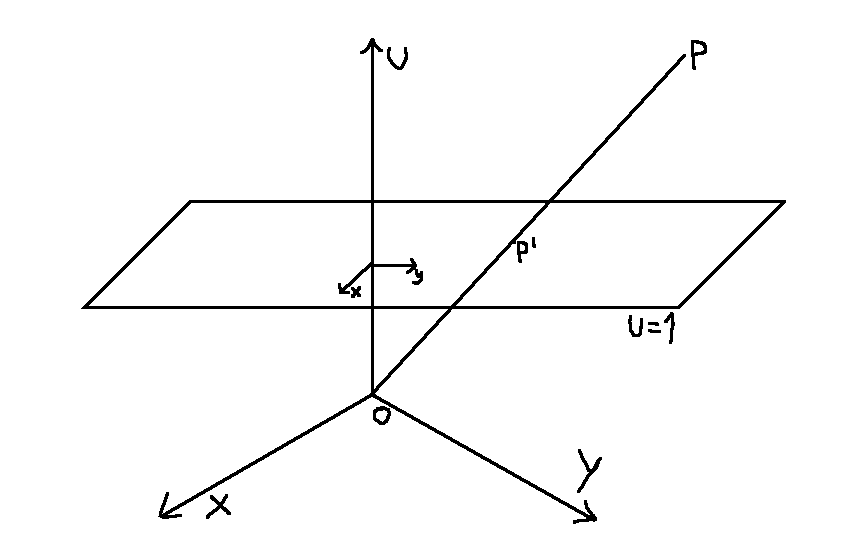
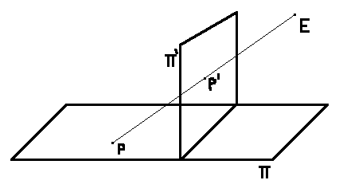
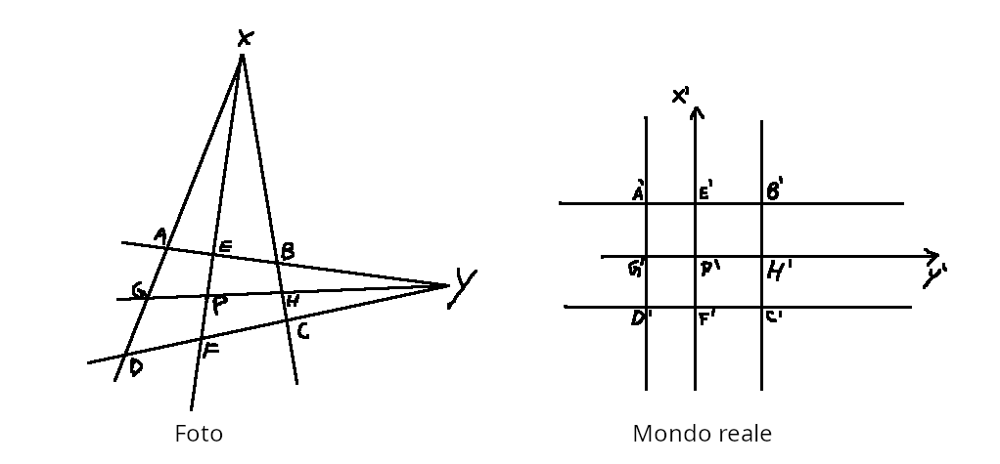

La geometria proiettiva estende lo spazio euclideo con l'aggiunta di punti impropri che rappresentano le direzioni delle varie rette. In un piano proiettivo due rette si incontrano sempre in un punto (nel caso di rette parallele nel loro punto improprio).
Considerando il caso bidimensionale si può dare un'interpretazione geometrica a partire dallo spazio $\mathbb{E}^3$.
Mostriamo la chiusura proiettiva del piano affine di equazione $U=1$.

Ogni punto $P'$ del piano $U=1$ è individuato da un punto $P \neq O$ dello spazio $\mathbb{E}^3$ fuori dal piano $U=0$ nel seguente modo: si prende la retta
passante per l'origine $O$ e $P$ e si individua il punto $P'$ con l'intersezione di questa retta e il piano $U=1$.
Le coordinate proiettive di $P'$ sono così quelle di $P$, si usa questa notazione $(X:Y:U)$.
I punti propri sono quelli con la terza coordinata $U \neq 0$ e le coordinate affini $(x, y)$ di tali punti si determinano così:
$$
\begin{equation*}
\left\{
\begin{aligned}
& x = \frac{X}{U} \\
& y = \frac{Y}{U}
\end{aligned}
\right.\;,\;U \neq 0
\end{equation*}
$$
I punti impropri invece sono individuati dalle rette $PO$ di $\mathbb{E}^3$, passanti per $O$ e parallele al piano $U=1$ e quindi rappresentano una direzione all'interno del suddetto piano.
Dato che ogni punto della retta individua lo stesso punto proprio o improprio nel piano $U=1$ le coordinate proiettive identificano un punto a meno di un fattore di proporzionalità $\rho \in \mathbb{R}$. $$ (X:Y:U) \equiv \rho(X:Y:U) $$
Una prospettività è una funzione biunivoca $\omega: \mathbb{P}^2 \rightarrow \mathbb{P}^2$ che ad ogni punto $P$ di un piano proiettivo $\Pi$
associa un punto $P'$ di un altro piano proiettivo $\Pi'$ come se $P$ fosse visto attraverso di esso avendo come punto di vista il punto $E$, esterno ad entrambi i piani.

In termini di coordinate proiettive una prospettività può essere espressa da una matrice $A_{(3x3)}$ con $det(A) \neq 0$ a meno di un fattore di proporzionalità $\rho \in \mathbb{R}$:
$$
\rho P' = AP
$$
Ogni prospettività conserva un invariante che è il birapporto di 4 punti distinti e allineati, così definito
$$
(A, B, C, D) = \frac{(A, B, C)}{(A, B, D)} \;\;\; con \;\;\; (A, B, C) = \frac{\overline{AC}}{\overline{BC}}
$$
Per il calcolo di un birapporto $(A, B, C, D)$ si possono usare le coordinate affini $a, b, c, d$ di tali punti sulla
retta $r$ alla quale appartengono.
Se uno di tali punti, ad esempio $D$ è improprio per $r$ a tale punto si associa una coordinata variabile $t$ e poi
si calcola il limite di $(a, b, c, t)$ per $t\to\infty$.
Se i punti appartengono a una retta propria, essendo distinti, può esserci al più un solo punto improprio ovvero quello della retta.
Se invece i punti appartengono alla retta impropria allora tutti e quattro saranno punti impropri.
Nel caso d'interesse dell'applicativo i quattro punti appartengono a una retta propria e uno di essi, ovvero $D$, è il punto improprio
di tale retta.
Conoscendo il birapporto $R$ dei 4 punti $A, B, C, D$ si può ottenere la posizione di $B$ come
$$
R\; =\;(A, B, C, D)\; = \; \frac{c-a}{c-b} \Rightarrow b = \frac{cR+a-c}{R}
$$
Dove con $a, b, c$ si indicano rispettivamente le coordinate affini sulla retta dei punti $A, B, C$.
Supponiamo che la prospettività tra due piani sia data da una foto aerea scattata dal punto $E$.
Data la proiezione $ABCD$ di un rettangolo fotografato da un aereo e sapendone le misure dei due lati è possibile
ricavare la posizione nel mondo reale $P'$ di ogni generico punto $P$ della foto sfruttando la proprietà di invarianza del birapporto, vediamo come:

Il punto $X$, corrispondente a un punto improprio $X'$ nel mondo reale, è l'intersezione tra la retta passante per $A$, $D$ e quella passante per $B$, $C$.
Tramite l'intersezione della retta passante per $A$, $B$ e quella passante per $D$, $C$ si ottiente $Y$.
L'intersezione della retta passante per $A$, $B$ e di quella passante per $P$, $X$ individua $E$.
Allo stesso modo si hanno $F$, $G$ ed $H$ ossia di tutti i punti indicati nella foto.
Il birapporto $(X, E, P, F)$ è uguale al birapporto dei punti nel mondo reale $(X', E', P', F')$ dove $X'$ indica il
punto improprio della retta verticale. Dato che i punti sono allineati e si conoscono $E'_y$ e $F'_y$, sfruttando la proprietà di invarianza del birapporto
si può ricavare $P'_y$ dove $\square_y$ indica le coordinate $y$ del punto $\square$.
Eseguendo lo stesso procedimento sugli altri punti ottengo anche $P'_x$ e quindi la posizione $(P'_x, P'_y)$ nel mondo reale di un qualunque
generico punto $P$ della foto.
Individuare l'intersezione di due rette nel piano affine euclideo equivale a risolvere il sistema
\begin{equation*}
\left\{
\begin{aligned}
& ax + by + c = 0 \\
& a'x + b'y + c' = 0
\end{aligned}
\right.
\end{equation*}
Il sistema si può ovviamente riscrivere come
\begin{equation*}
\left\{
\begin{aligned}
& ax + by = -c \\
& a'x + b'y = -c'
\end{aligned}
\right.
\end{equation*}
che posto in forma matriciale equivale a $M\underline{x} = c$ con
$$M = \begin{bmatrix}
a & b\\
a' & b'
\end{bmatrix}\;\;\;\;
\underline{x} = \begin{bmatrix}
x\\
y
\end{bmatrix}\;\;\;\;
c = \begin{bmatrix}
-c\\
-c'
\end{bmatrix}$$
Il numero di soluzioni del sistema segue direttamente dal teorema di Rouché-Capelli.
Se $Det(M) \neq 0$ si ha un unica soluzione, ovvero le rette sono incidenti.
Se $Det(M) = 0$ e $Rk(M|c) = 1$, si hanno $\infty ^1$ soluzioni, ovvero le due rette sono la medesima retta.
Se $Det(M) = 0$ e $Rk(M|c) = 2$ il sistema non ammette soluzioni, ovvero le due rette sono parallele.
Tuttavia diversa è la situazione in geometria proiettiva in quanto se le rette sono parallele, ovvero il sistema non ammette soluzioni nel piano affine euclideo, esiste comunque un'unica soluzione che è data dal punto improprio comune alle due rette.
Per calcolare la distanza tra due punti propri $A, B \in \mathbb{P}^2$ si deve prima dividere le tre coordinate di $A, B$ per le loro terze coordinate e poi calcolare la distanza euclidea tra i due punti risultanti. $$ (A_x : A_y : A_u) \rightarrow \left(\frac{A_x}{A_u}, \frac{A_y}{A_u}\right) = (A'_x, A'_y)\\ $$ Idem per i punti di $B$, allora $$ dist(A, B) = \sqrt{(A_x'-B_x')^2+(A_y'-B_y')^2} $$
Per calcolare la misura in radianti $\alpha$ dell'angolo tra due vettori $v, w$ di un piano affine euclideo si può procedere allo stesso modo tenendo conto che $$ cos(\alpha) = \frac{v \times w}{\|v\|\|w\|} $$
Prima di procedere occorre verificare che i punti selezionati dall'utente siano un quadrilatero convesso. Per fare ciò si può considerare l'involucro convesso di questi ultimi e controllare se anch'esso ha 4 vertici. Questo permette di rilevare il caso in cui vengano forniti punti non distinti, allineati oppure che siano vertici di un poligono concavo.
Esistono vari algoritmi per risolvere questo problema, per questa applicazione è stata usata un'implementazione di terzi dell'algoritmo di Jarvis.